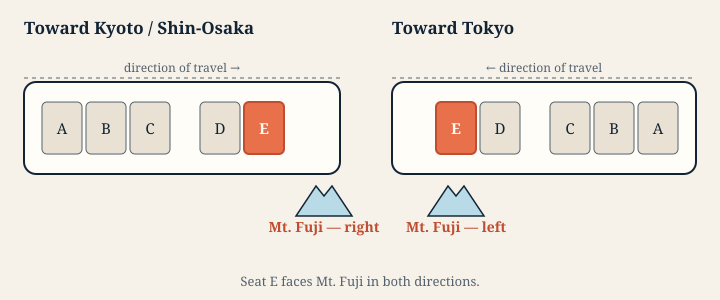

De quel côté ? Vers Kyoto ou Shin-Osaka, le mont Fuji se trouve à droite — Siège E. Au retour vers Tokyo, il se trouve à gauche, toujours à la place E. Les lettres des places ne changent pas selon le sens de circulation : la montagne se trouve simplement au nord de la voie.
Green Car. La place côté fenêtre équivalente est la place D.
Pendant combien de temps ? Environ trois à quatre minutes, près de Shin-Fuji.
Ce que couvre réellement le pass
Les trois services du Tokaido Shinkansen empruntent la même voie : le paysage est donc identique. Ce qui change, c’est le nombre d’arrêts et, par conséquent, l’heure à laquelle vous arrivez au mont Fuji.
- Nozomi — le plus rapide, avec le moins d’arrêts. Les titulaires du pass ont besoin d’un billet spécial supplémentaire pour l’emprunter.
- Hikari — inclus. Quelques arrêts de plus.
- Kodama — inclus. Dessert toutes les gares, dont Shin-Fuji.
Le Kodama est le moyen le plus lent de rejoindre Kyoto et le meilleur pour admirer la montagne : il s’arrête à Shin-Fuji, avec le mont Fuji juste à côté du train immobile.
Le train lent s’arrête là où se trouvent les paysages
Plusieurs des plus beaux paysages se trouvent juste à côté d’une gare. Plus le train est rapide, moins vous en profitez : en Nozomi, ils défilent en quelques secondes ; en Kodama, vous pouvez être à l’arrêt devant eux.
Château de Kakegawa en est le meilleur exemple. Son donjon blanc se trouve à quelques pas de la gare de Kakegawa. Dans les horaires actuels, 62 Kodama s’arrêtent à Kakegawa, contrairement aux Hikari et Nozomi, qui n’y font aucun arrêt. À pleine vitesse, le château n’est visible qu’un peu plus de dix secondes, réparties de part et d’autre de la gare. En Kodama à l’approche de Kakegawa, il reste dans le champ de la fenêtre pendant environ une demi-minute, disparaissant parfois derrière les bâtiments avant de réapparaître, puis le train s’arrête. Château d’Odawara offre une situation semblable : les Kodama et certains Hikari s’arrêtent à Odawara.
Le choix ne se résume donc pas à voyager plus lentement pour moins cher. Avec un Japan Rail Pass, vous prenez les seuls trains qui s’arrêtent devant plusieurs de ces paysages.

Horaires du mont Fuji, train par train
Les tableaux indiquent les arrêts prévus des Kodama à Shin-Fuji. Les Hikari traversent Shin-Fuji sans s’arrêter. L’heure de passage estimée figure dans le parcours de chaque train.
Choisissez un numéro de train pour ouvrir son parcours de paysages : chaque vue est accompagnée d’une heure et d’un côté de siège, calculés à partir des horaires de ce train.
Horaires mis à jour le
Les heures sont indiquées en heure du Japon (JST). Les jours de circulation et les retards en temps réel ne sont pas pris en compte. Vérifiez votre date de voyage auprès de la compagnie ferroviaire.
Vers Kyoto et Shin-Osaka
Le mont Fuji se trouve à votre droite, à la Siège E.
| Train | Départ | Départ à | À Shin-Fuji | Temps écoulé |
|---|---|---|---|---|
| Tokyo | 06:30 | 07:39 | 69 min | |
| Tokyo | 06:57 | 08:07 | 70 min | |
| Tokyo | 07:27 | 08:37 | 70 min | |
| Tokyo | 07:57 | 09:07 | 70 min | |
| Tokyo | 08:27 | 09:37 | 70 min | |
| Tokyo | 08:57 | 10:07 | 70 min | |
| Tokyo | 09:27 | 10:37 | 70 min | |
| Tokyo | 09:57 | 11:07 | 70 min | |
| Tokyo | 10:27 | 11:37 | 70 min | |
| Tokyo | 10:57 | 12:08 | 71 min | |
| Tokyo | 11:27 | 12:37 | 70 min | |
| Tokyo | 11:57 | 13:08 | 71 min | |
| Tokyo | 12:27 | 13:37 | 70 min | |
| Tokyo | 12:57 | 14:08 | 71 min | |
| Tokyo | 13:27 | 14:37 | 70 min | |
| Tokyo | 13:57 | 15:08 | 71 min | |
| Tokyo | 14:27 | 15:37 | 70 min | |
| Tokyo | 14:57 | 16:08 | 71 min | |
| Tokyo | 15:27 | 16:37 | 70 min | |
| Tokyo | 15:57 | 17:08 | 71 min | |
| Tokyo | 16:27 | 17:37 | 70 min | |
| Tokyo | 16:57 | 18:08 | 71 min | |
| Tokyo | 17:27 | 18:37 | 70 min | |
| Tokyo | 17:57 | 19:08 | 71 min | |
| Tokyo | 18:27 | 19:37 | 70 min | |
| Tokyo | 18:57 | 20:08 | 71 min | |
| Tokyo | 19:27 | 20:37 | 70 min | |
| Tokyo | 19:57 | 21:07 | 70 min | |
| Tokyo | 20:27 | 21:35 | 68 min | |
| Tokyo | 21:15 | 22:25 | 70 min | |
| Tokyo | 21:45 | 22:48 | 63 min | |
| Tokyo | 22:12 | 23:11 | 59 min |
Vers Tokyo
Le mont Fuji se trouve à votre gauche, à la même Siège E.
| Train | Départ | Départ à | À Shin-Fuji | Temps écoulé |
|---|---|---|---|---|
| Shizuoka | 06:22 | 06:35 | 13 min | |
| Hamamatsu | 06:20 | 06:56 | 36 min | |
| Shizuoka | 07:02 | 07:13 | 11 min | |
| Hamamatsu | 06:43 | 07:22 | 39 min | |
| Hamamatsu | 06:55 | 07:47 | 52 min | |
| Gifu-Hashima | 06:30 | 08:22 | 112 min | |
| Nagoya | 07:38 | 09:10 | 92 min | |
| Nagoya | 08:08 | 09:41 | 93 min | |
| Nagoya | 08:38 | 10:13 | 95 min | |
| Shin-Osaka | 07:54 | 10:41 | 167 min | |
| Nagoya | 09:38 | 11:10 | 92 min | |
| Shin-Osaka | 08:54 | 11:41 | 167 min | |
| Nagoya | 10:38 | 12:13 | 95 min | |
| Shin-Osaka | 09:54 | 12:41 | 167 min | |
| Nagoya | 11:38 | 13:10 | 92 min | |
| Shin-Osaka | 10:54 | 13:41 | 167 min | |
| Nagoya | 12:38 | 14:13 | 95 min | |
| Shin-Osaka | 11:54 | 14:41 | 167 min | |
| Nagoya | 13:38 | 15:10 | 92 min | |
| Shin-Osaka | 12:54 | 15:41 | 167 min | |
| Nagoya | 14:38 | 16:11 | 93 min | |
| Shin-Osaka | 13:54 | 16:41 | 167 min | |
| Nagoya | 15:38 | 17:11 | 93 min | |
| Shin-Osaka | 14:54 | 17:41 | 167 min | |
| Nagoya | 16:38 | 18:11 | 93 min | |
| Shin-Osaka | 15:54 | 18:41 | 167 min | |
| Nagoya | 17:38 | 19:11 | 93 min | |
| Shin-Osaka | 16:54 | 19:41 | 167 min | |
| Nagoya | 18:38 | 20:13 | 95 min | |
| Shin-Osaka | 17:54 | 20:41 | 167 min | |
| Nagoya | 19:38 | 21:05 | 87 min | |
| Shin-Osaka | 18:54 | 21:41 | 167 min | |
| Nagoya | 20:46 | 22:21 | 95 min |
Vous prenez un Hikari ? Ouvrez le parcours de votre train
Sélectionnez un Hikari pour voir son heure de passage estimée à partir de ses arrêts prévus.
Vers Kyoto et Shin-Osaka
- au départ de Tokyo
- au départ de Tokyo
- au départ de Tokyo
- au départ de Tokyo
- au départ de Tokyo
- au départ de Tokyo
- au départ de Tokyo
- au départ de Tokyo
- au départ de Tokyo
- au départ de Tokyo
- au départ de Tokyo
- au départ de Tokyo
- au départ de Tokyo
- au départ de Tokyo
- au départ de Tokyo
- au départ de Tokyo
- au départ de Tokyo
- au départ de Tokyo
- au départ de Tokyo
- au départ de Tokyo
- au départ de Tokyo
- au départ de Tokyo
- au départ de Tokyo
- au départ de Tokyo
- au départ de Tokyo
- au départ de Tokyo
- au départ de Tokyo
- au départ de Tokyo
- au départ de Tokyo
- au départ de Tokyo
- au départ de Tokyo
- au départ de Shin-Yokohama
Vers Tokyo
- au départ de Nagoya
- au départ de Nagoya
- au départ de Shin-Osaka
- au départ de Shin-Osaka
- au départ de Shin-Osaka
- au départ de Shin-Osaka
- au départ de Shin-Osaka
- au départ de Shin-Osaka
- au départ de Shin-Osaka
- au départ de Shin-Osaka
- au départ de Shin-Osaka
- au départ de Shin-Osaka
- au départ de Shin-Osaka
- au départ de Shin-Osaka
- au départ de Shin-Osaka
- au départ de Shin-Osaka
- au départ de Shin-Osaka
- au départ de Shin-Osaka
- au départ de Shin-Osaka
- au départ de Shin-Osaka
- au départ de Hiroshima
- au départ d’Okayama
- au départ d’Okayama
- au départ d’Okayama
- au départ d’Okayama
- au départ d’Okayama
- au départ d’Okayama
- au départ d’Okayama
- au départ d’Okayama
- au départ d’Okayama
- au départ d’Okayama
- au départ d’Okayama
Avant de monter à bord
La place E est côté fenêtre, du côté du mont Fuji, dans les voitures ordinaires. Avec un billet à place réservée, vous pouvez la choisir à l’avance ; le Japan Rail Pass inclut sans supplément la réservation des places dans les Hikari et Kodama concernés. Pour les titulaires du pass, le Nozomi nécessite un billet spécial supplémentaire. Consultez les sources officielles pour les conditions et tarifs actuels : japanrailpass.net et JR Central. Si la place E est complète, n’allez pas vous installer debout dans la rangée de quelqu’un d’autre : cherchez plutôt le bref aperçu du Fuji du côté gauche, depuis la place A, ou le lac Hamana, visible des deux côtés.
Si la montagne est cachée
Le mont Fuji est souvent invisible ; les matinées d’hiver dégagées offrent de loin les meilleures chances. Le voyage ne s’arrête pas là : par la même fenêtre défilent des châteaux, un lac traversé sur un pont bas, des champs de thé, une pagode de Kyoto et quelques grandes énigmes qui alimentent les conversations.